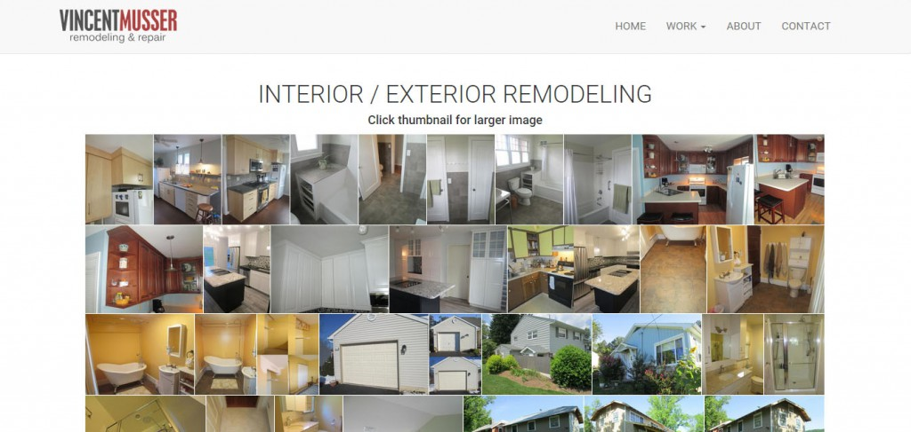
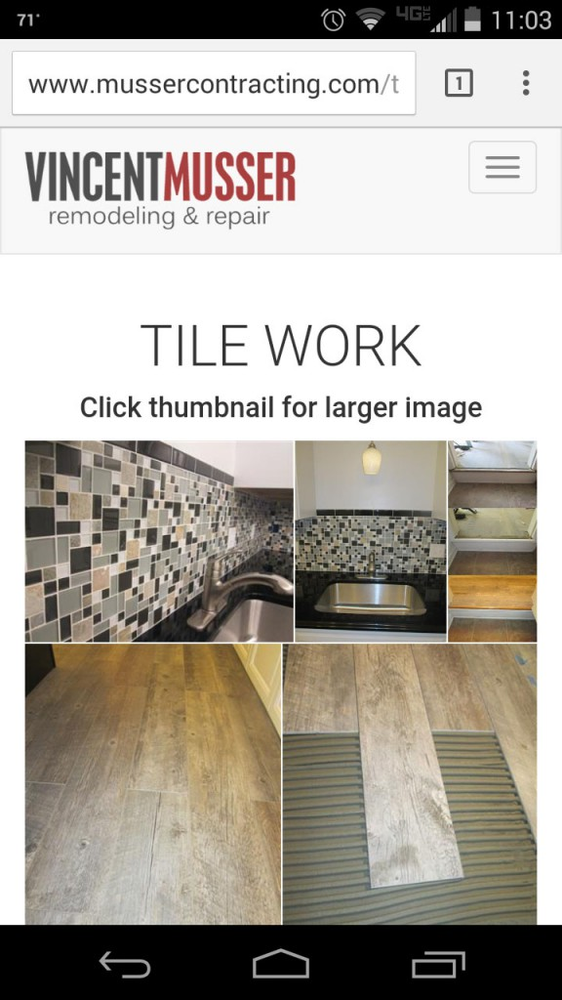

<div class="cbp-l-inline">
    <div class="cbp-l-inline-left">
        <div class="cbp-slider">
            <ul class="cbp-slider-wrap">
                <li class="cbp-slider-item">
                    <a href="../images/web/musser01.jpg" class="cbp-lightbox">
                        
                    </a>
                </li>
                <li class="cbp-slider-item">
                    <a href="../images/web/musser02.jpg" class="cbp-lightbox">
                        
                    </a>
                </li>
            </ul>
        </div>
    </div>
    <div class="cbp-l-inline-right">
        <div class="cbp-l-inline-title">Musser Contracting</div>

        <div class="cbp-l-inline-desc">A portfolio website built on Twitter Bootstrap to showcase the work of a local contractor. Utilizes jQuery plugins Fotorama, Justified, and Colorbox, for simple and elegant display of images. Mobile-responsive design.</div>

        <div class="cbp-l-inline-view-wrap">
            <a href="http://www.mussercontracting.com/" target="_blank" class="cbp-l-inline-view">VIEW PROJECT</a>
        </div>
    </div>
</div>
